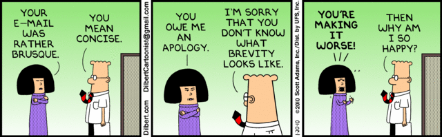

Week 8 Cultural Blog - Dealing with Conflict

Dealing with conflict can be a very difficult thing and something that can leave us broken, diminished, unhappy, or disengaged from our work. But if handled well, can also help us better understand ourselves, help us grow, bring us closer together as a team, and to help us see other's view points more rapidly.
Today's blog is all about dealing with conflict and how I myself have dealt with it in the past.
The Story
I remember when I was first starting out as an IT guy and I was paired to work with a more experienced employee. We'll name this employee "Jack" for the purposes of our story.
Jack was what I like to call a "Know it all". He had an answer for everything and as the new guy I had to do it his way unless I wanted to be berated and made to do everything over again.
Jack constantly reminded me that I had no idea what I was doing and that I was a worthless employee. To make things worse he would always question why he had to tell me how to do things just because I wouldn't always do them the way he wanted them done.
Jack wasn't all bad, he got his work done and he did teach me a few things a long the way but oh how I wanted to punch him in the face most days for the way he treated me.
Over time, I disengaged from my work and found myself avoiding anything that would involve me with Jack. To make things worse, I was not the only person in the company with a problem with Jack and I was often made fun of for having to work with him.
I have to admit that I did not treat Jack very kindly in return for his behavior towards me. I was often short with him and on a few occasions I even left the room when he was talking at me in his normal "you're and idiot" tone of voice.
I even remember having to talk with our supervisor at one point when Jack made it a point to tell our supervisor that I was worthless and that he was having to do all my work. That was a fun conversation and only served to increase the conflict between the two of us.
The source of the conflict
The source of the conflict had everything to do with two things. The first was Jack's need to over state his qualifications and knowledge in a play to cover his perceived shortcomings. We all knew Jack was not the best tech and we all knew that he knew that too. His need to put me down and show off his knowledge was his way of fitting in.
The second part of the conflict was my feeling of being neglected and having a poor learning experience as the new guy. I felt cut off from the rest of the IT department due to everyone hating to work with Jack. In short, I felt like Jack was holding me back from learning and growing.
How I handled it
I will be the first to admit that I didn't handle the situation as best I could. I disengaged from my work and found excuses to avoid the conflict. I would let Jack handle the major stuff and I would tackle the small stuff that didn't require his help. I rationalized that the lack of learning from avoiding Jack was worth not having to deal with him.
I also became short with Jack. Being kind to him or getting to know him was not high on my lists of priorities and I made that well known to him.
How my actions made things worse
Most people would have said that my actions were justified. In fact several co-workers said just that. Even our supervisor said something to that effect after I had my long talk with him after Jack made it clear that I was worthless.
But my actions only served to make things worse. In avoiding the conflict I removed myself from any opportunity to resolve it. I continued to hate my job. I continued to feel the same feelings day in and day out.
Even worse, I prevented myself from helping Jack. Jack's behavior only got worse the more I avoided him. I can see now how Jack needed a friend and some validation more than he needed my avoidance and attitude.
If I could go back
Now that I'm older and I can see the situation better, I wish I could go back and be a better friend to Jack. I think Jack was the out-sider of the IT department and having a friend would have gone a long way to ground Jack and provide the validation and acceptance that he needed and wanted.
My take away
We're all human and we're all seeking validation and acceptance. Jack just didn't know the best way to go about it and I didn't know how to deal with it. Knowing yourself can go a long way to helping you understand others. To some degree I to wanted the same things Jack did. I just employed different tactics to try and achieve it. Finding that commonality can be the thing that really brings people together and strengthens us as individuals as well as teams.